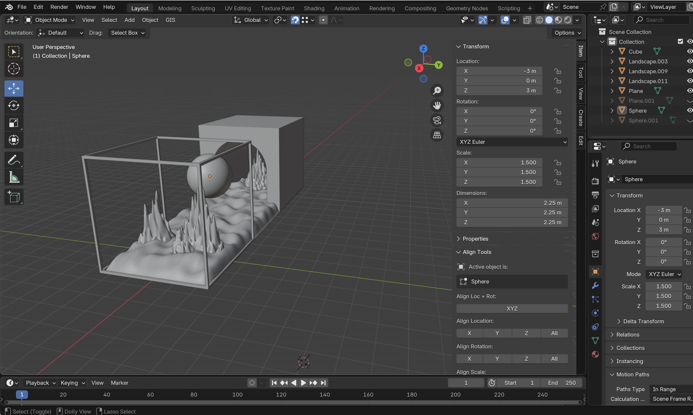
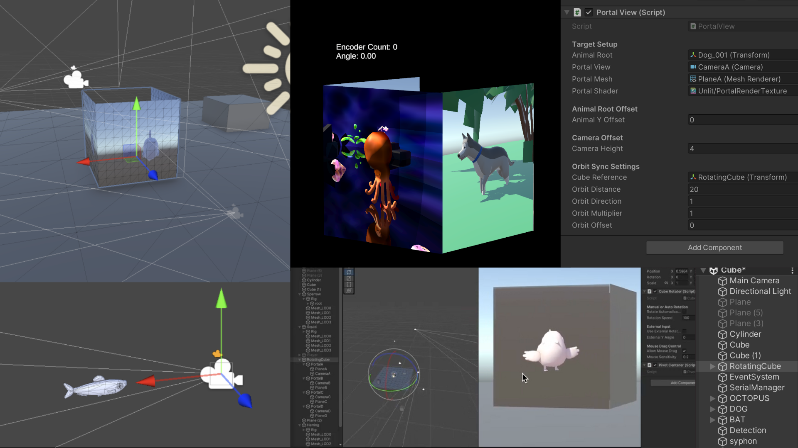
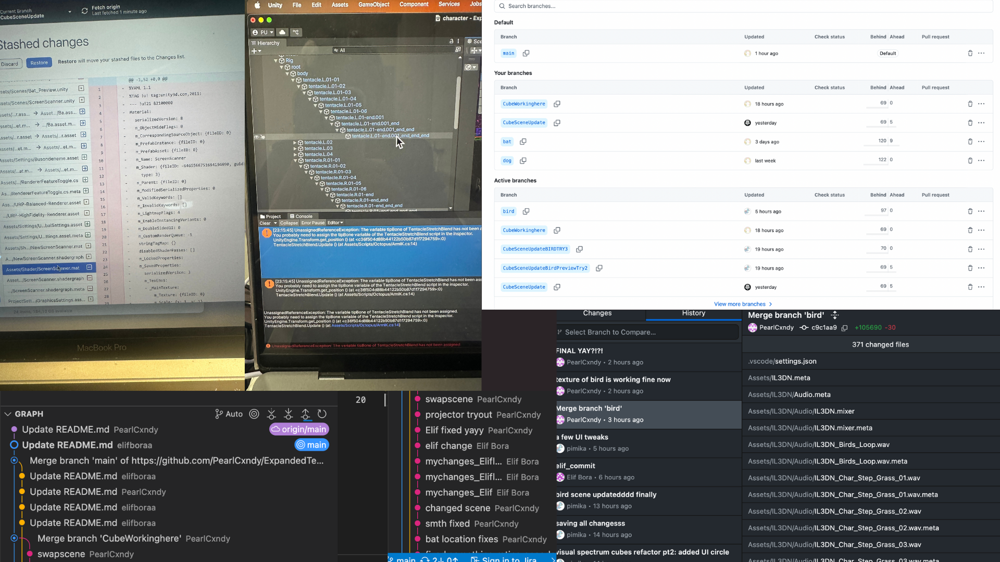
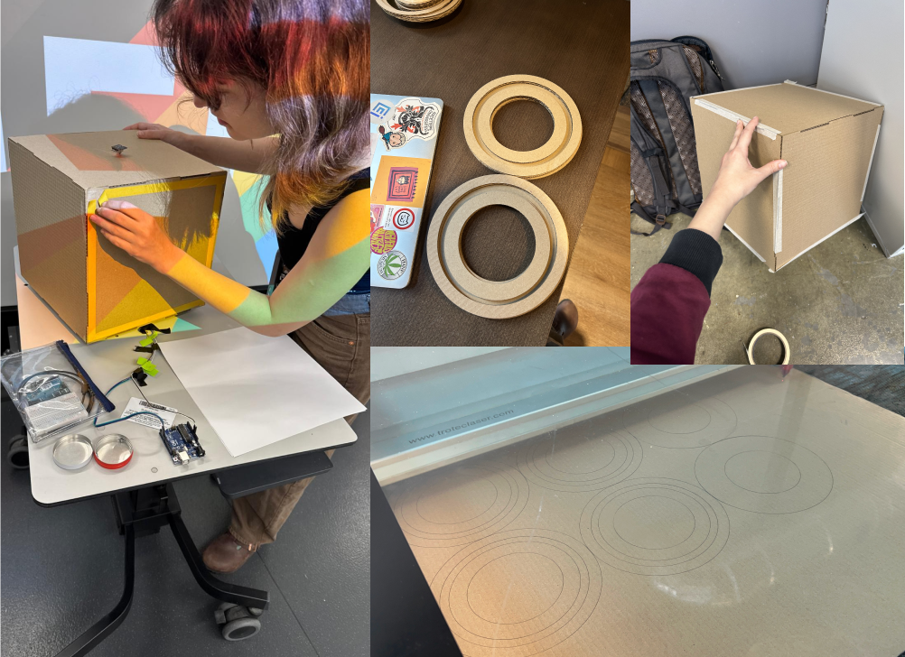

"Umwelt" is the an organism's unique viewpoint, which is influenced by its perceptual systems and sensory organs. This project seeks to provoke the user to consider ethical and philosophical issues, such as "Is the ideal world I am imagining for myself also ideal for another species?" and "How does my perception shape the way I think?". Additionally,the project seeks to assist the user in finding their place in the world, on an equal footing with all of their neighbours.
Technical Description
The project is a rotating cube that is interactive and projection mapped. Each vertical face displays a game world created using Unity that reflects the digital environments of four distinct animals: birds, dogs, octopuses, and bats. Rotation is done manually, and the rotation data is read by an autoencoder, which subsequently delivers it to Unity and Touhdesigner (for projection mapping). The user can join the scenario and navigate in a playable manner by spinning the cube to explore the sensory views of four distinct animals, as shown in the diagram below.Proccess
Phase I: Ideation
Branstormed, created a research question and used various resources to gain knowledge on technical and theoretical details. Finally, created a common design language for representing different species.

Phase II: Building Each Scene
As a group, we decided to use pack of characters that fit with our visual composition, from the Unity Asset Store. Unfortunately this pack did not contain a bat, therefore I decided to turn the mouse model into a bat. I found another bat model online to make use of wings. In blender,where I merged a bat model's wings with to the mouse. I made the ears of the mouse bigger. However this proccess caused the existing animation in the wings to be lost. Therefore I reanimated the wings using rigs.
The Bat Scene
Character Model and Animation
Terrain Model

Shader
Infinite Runner Game Mechanics
Player Avatar
Rewards
Obstacles
The Digital Cube

Merging Each Scene on Digital Cube

The Physical Cube
